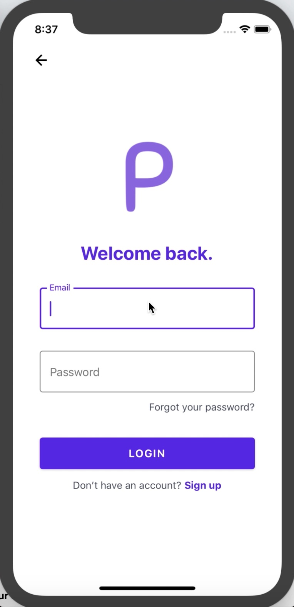

Menu
MenuPROJECTS
This Website
This website is one of the first projects I worked on. I began it to
showcase my programming skills to prospective employers. Over three years
it has undergone a number of changes. You can take a look at the source
code by visiting the github link at the bottom of this section.
I began the process of building a website in my first-year of university.
At the time, I had no experience in HTML, CSS, JavaScript, or UI/UX. I
started from scratch and learned through online tutorials and plenty of
trial and error. Over time I have gained skills in each of these concepts.
I would say that my foremost interest is web development and UI/UX, and
that probably has something to do with my experience building this site.
Although this site did not help me achieve my first internship at Ontario
Shores, it did help me to secure my second internship at Kontrol Energy.
As a Full-Stack Developer I spend a significant amount of time on both
design and front-end implementation.
Planit
